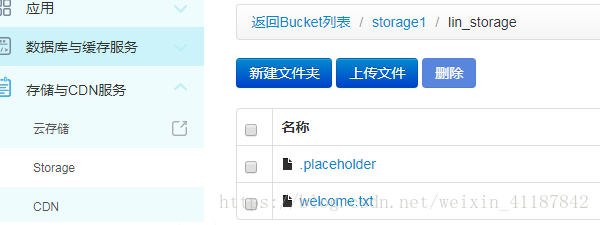
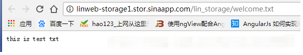
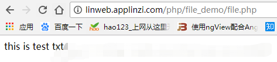
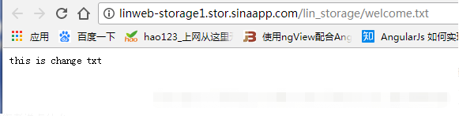

有的人喜欢将一些数据写在服务器的文件里面，并不喜欢存在mysql里，但新浪sae却不支持对本地文件进行操作。
不过sae拓展了一个storage的服务，可以将一些静态文件放在上面。本文不介绍文件的上传与下载，只介绍对某个文档进行修改。
首先你要开通storage服务

这里可以看到我的domain是storage1，要修改的文件是lin_storage下的welcome.txt。
文件内的内容如下

下面用php读取welcome.txt文档下的内容
file.php
1 <?php
2 $domain = "storage1"; //Domain可以在后台面板设置
3 $filename = "lin_storage/welcome.txt";
4 $file=fopen("saestor://".$domain."/".$filename,"r+") or exit("Unable to open file!");
5 while(!feof($file))
6 {
7 echo fgets($file);
8 }
9 fclose($file);结果：

可以看到读取成功。
下面是修改welcome.txt文档下的内容
<?php
$domain = "storage1"; //Domain可以在后台面板设置
$filename = "lin_storage/welcome.txt";
$file=fopen("saestor://".$domain."/".$filename,"w") or exit("Unable to open file!");
$txt = "this is change txt";
fwrite($file, $txt);
fclose($file);
结果：

修改成功。